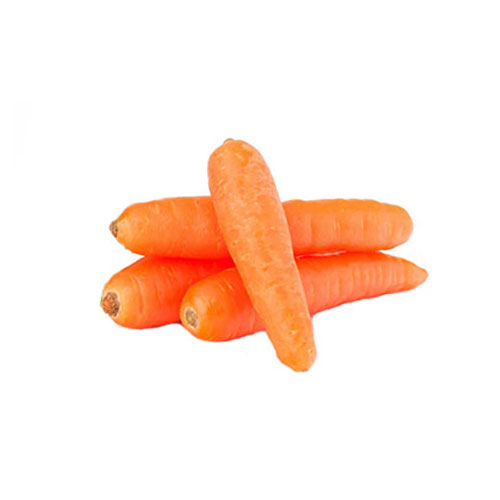
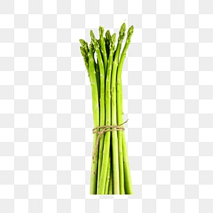
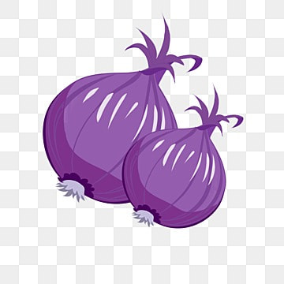

Uh oh! Have you had your daily dose of veggies today??
Wild & Wacky Vegetables
Vegetables are essential components of a healthy diet, offering a plethora of vitamins, minerals, and fiber. From vibrant greens like spinach and kale to the earthy sweetness of carrots and beets, vegetables come in a diverse range of flavors and textures. Whether steamed, roasted, or enjoyed raw, incorporating a variety of vegetables into meals ensures a balanced and nutritious diet
Tom Robbins.
Some diseases
| Veggie |
Disease |
| Beets |
Beeturia |
| Carrots |
Carotenosis |

| Beets |


Carrots |
Asparagus |
| first thing we are going |
first thing we are going |
first thing we are going |
Really informative info
Vegetables are a vital part of a balanced diet due to their rich nutritional content. Packed with essential vitamins, minerals, and dietary fiber, they contribute to overall health and well-being. Dark, leafy greens such as spinach and kale are abundant in iron and calcium, while colorful bell peppers and tomatoes provide a hefty dose of antioxidants like vitamin C. Root vegetables like carrots and sweet potatoes offer ample amounts of beta-carotene, important for eye health. Incorporating a diverse range of vegetables into daily meals not only adds flavor and texture but also supports optimal nutrition and disease prevention.